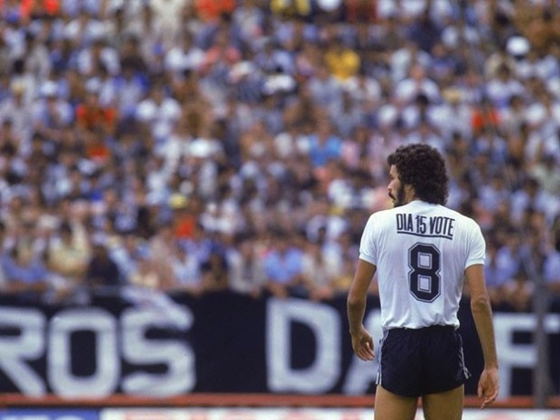
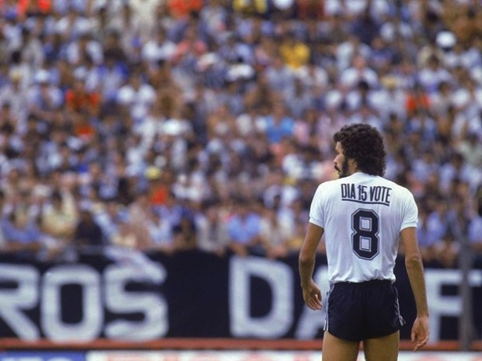
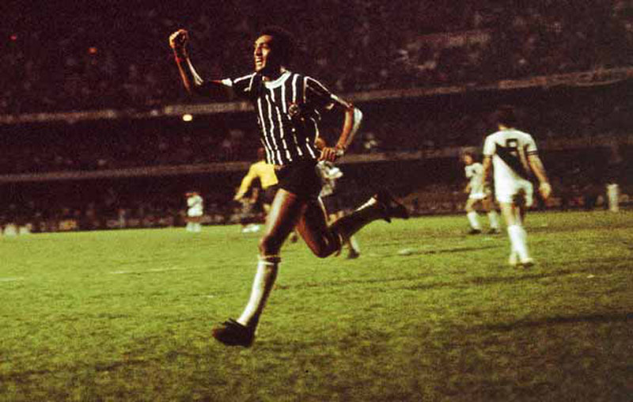
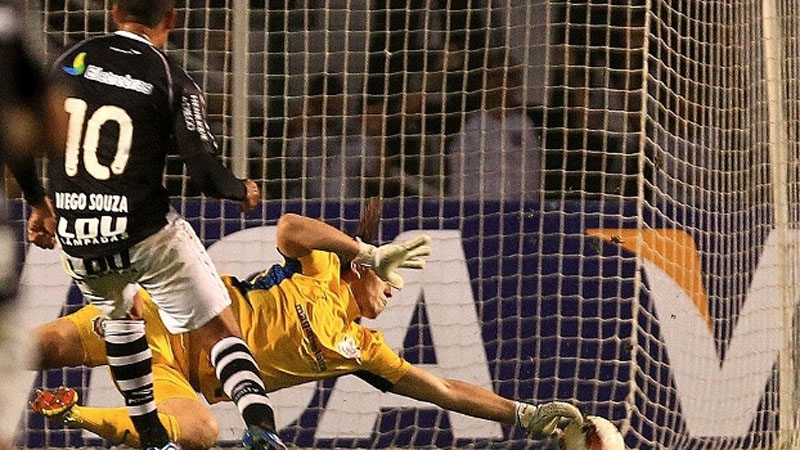
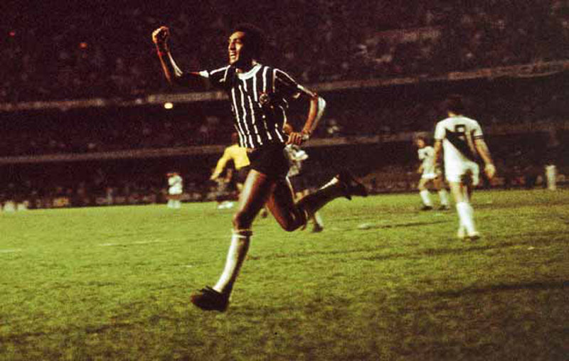
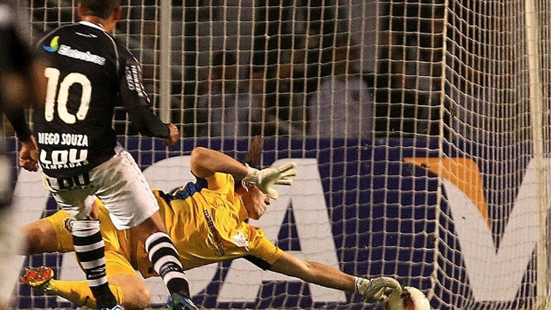

HISTÓRIA
A fundação
Em 1º de setembro de 1910, cinco trabalhadores foram inspirados pela turnê do Corinthian Football Club
no Brasil. O time inglês já havia vencido com facilidade o Fluminense e o Club Athletico Paulistano,
e nesse dia, cravou mais uma vitória sobre um dos grandes times paulistas da época, a Associação Atlética
das Palmeiras.
Na volta da partida, ainda em êxtase, os cincos operários (Joaquim Ambrósio, Antônio Pereira,
Rafael Perrone, Anselmo Côrrea e Carlos Silva) se deparam com um terreno baldio na Rua José Paulino,
chamada na época de Rua dos Imigrantes, na esquina com a Rua Cônego Martins - no bairro do Bom Retiro.
Este viria a ser o primeiro campo do Corinthians, apelidado de “Lenheiro”, por ter servido anteriormente
como um depósito de lenha.
Naquele momento, eles decidiram que criariam um time. Formou-se, então, o primeiro grupo, com treze
integrantes - os cinco idealizadores e mais oito moradores do bairro convidados -, que contribuíram
como sócio-fundadores do clube, ainda sem nome. As reuniões continuaram na casa de alguns integrantes,
entre eles Miguel Bataglia, um alfaiate que veio a ser, ainda que por curtíssimo tempo, o primeiro
presidente do clube.
Primeiro desafios e decisões
O nome Corinthians foi sugerido e bem aceito por todos, ainda que fosse uma corruptela do nome original
do clube homenageado. O primeiro não possuía o “s” em sua grafia, sendo assim chamado apenas pela imprensa
brasileira da época, que se referia ao time inglês como “Corinthian’s Team”.
O primeiro grande desafio foi a compra de uma bola, quando os sócio-fundadores saíram às ruas do Bom Retiro
tentando angariar novos sócios e arrecadar o montante de 6 mil réis necessários. O dinheiro arrecadado foi
despejado sobre o balcão de uma lojinha de esportes na rua São Caetano. Dinheiro trocado, com muitas notas
e moedas de baixo valor, mas que, enfim, possibilitou a compra da desejada bola.
Ao final, conseguiram dois objetivos: a nova bola e o número crescente de associados. Na época, os diretores
exigiam a associação para quem fosse doar o dinheiro. Em seguida, o segundo desafio foi preparar o campo da
José Paulino. Em um esforço conjunto, todos jogadores, diretores e associados se reuniram para fazer a capina do terreno.
O clube, idealizado há menos de duas semanas, disputou seu primeiro jogo em 14 de setembro de 1910, contra
o União da Lapa, e perdeu por 1 a 0. Apesar da derrota, o time impressionou, pois o adversário era tido como
um dos melhores clubes varzeanos. O placar de apenas um gol sofrido representava uma grande vitória ao novo clube.
A primeira escalação do Timão foi composta por: Valente, Perrone, Atílio, Lepre, Alfredo, Police, João da Silva,
Jorge Campbell, Fabbi, César Nunes e Joaquim Ambrósio. Como técnico, estava Rafael Perrone, um dos fundadores da equipe.
Início das glórias
No confronto seguinte, contra o Estrela Polar, o clube conquistou a primeira vitória. Fabbi e Jorge Campbell
marcaram o primeiro e o segundo gols da história corinthiana. O duelo terminou em 2 a 0. No terceiro jogo, ainda
sem ter uniforme, enfrentou o Atlética da Lapa, time totalmente formado por jogadores ingleses, os mestres do
futebol na época.
O placar da partida terminou em 5 a 0 para o Timão. Aconteceu uma festa no Bom Retiro para comemorar a vitória.
Extasiados pela conquista, os corinthianos decidiram comprar o primeiro uniforme, bege com gola, barra e punhos pretos,
inspirado no Corinthian. Com o uso, as roupas desbotaram e, como “o pequeno do Bom Retiro” não tinha condições de
renová-los, o Corinthians ganhou a cor da sua história: o preto e branco.
Nos dois anos seguintes, o Timão se consolidou como um ótimo time, atraindo a simpatia e a curiosidade de vários torcedores.
Logo, ficou conhecido como “o galo brigador do Bom Retiro”. Apesar de começar a se destacar no futebol, o Corinthians
ainda pertencia aos times “varzeanos” de São Paulo, já que o esporte era elitizado, e só podia participar das
competições oficiais equipes dos clubes aristocráticos da cidade.
Adeus, várzea
No entanto, em 1913, uma dissidência entre os clubes da elite permitiu uma seletiva aos times da várzea,
que poderiam disputar uma vaga para jogar na Liga Paulista de Foot-Ball. O Timão se classificou deixando
para trás times como o Minas Gerais, representante do Brás, e o FC São Paulo, time do Bixiga.
Como era o único time da liga onde pobres podiam jogar, e sua torcida era formada por trabalhadores e operários,
o Corinthians, nessa época, ganhou a alcunha que carrega até hoje, com muito orgulho, de “Time do Povo”.
O Timão também foi o primeiro clube paulistano a aceitar jogadores negros. Uma frase pronunciada por Miguel Battaglia
está eternizada: “O Corinthians vai ser o time do povo e o povo é quem vai fazer o time".
Assim, em 1913, o clube participou pela primeira vez do Campeonato Paulista. No ano seguinte, foi o campeão do torneio.
Foram dez vitórias em dez duelos e 37 gols marcados. Na última partida, venceu o Lusinato, no Parque Antártica,
por 3 a 0. Com sacrifício, aquele grupo de idealistas que queriam mudar os rumos do futebol paulista, até então
elitizado e reservado para um determinado grupo social, teve sua primeira grande conquista.
O campeão dos campeões
Daí por diante, muitas glórias vieram. Entre os principais títulos, destacam-se: dois Mundiais de Clubes,
uma Libertadores da América, uma Recopa Sul-Americana, sete Campeonatos Brasileiros, três Copas do Brasil,
cinco Taças Rio-São Paulo 30 Campeonatos Paulista e uma Supercopa do Brasil.
Além da equipe profissional de futebol, o Timão também se expandiu e, hoje, conta com um time feminino multicampeão
e com diversas categorias de base. Outros esportes também foram incorporados. São muitas as modalidades em que
é possível torcer para o Corinthians, alguns exemplos são o futsal e o baquete.


 



") 


